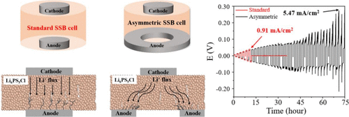
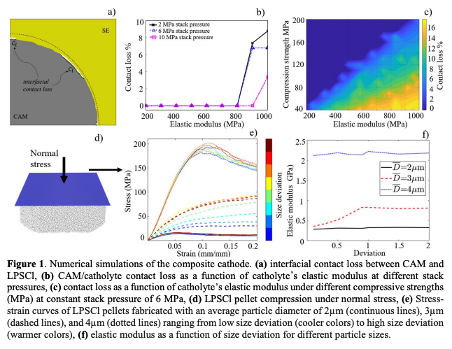
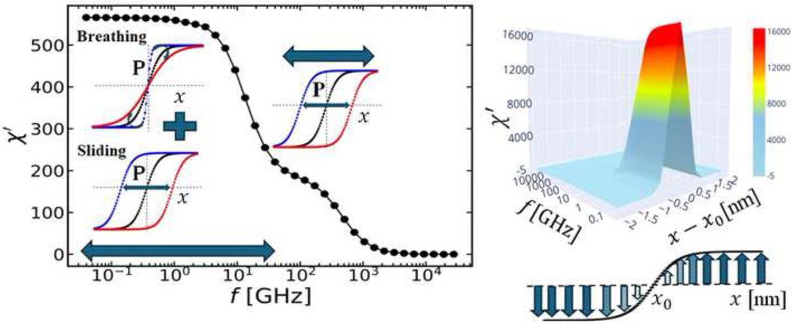
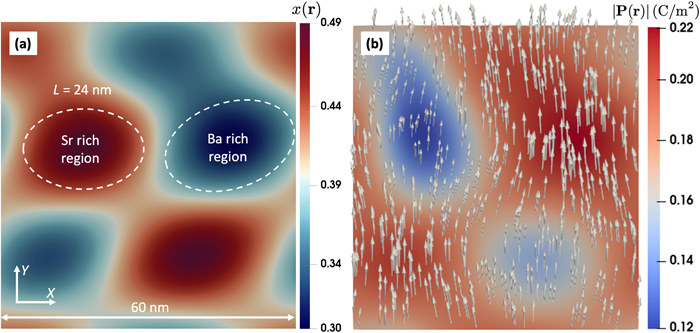
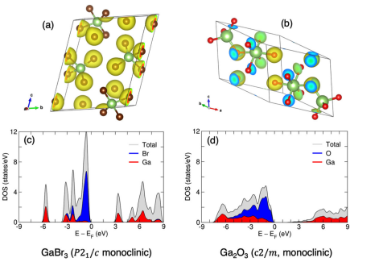

News
-
NEW
Book "Quantum Matters: From Fields to Life" by S. K. Nayak, R. E. Goetz, and A. Gurung is currently under submission.
-
May 2026: Presented at the Cer3D Symposium.
-
March 2026: Gave a talk at the Understanding Quantum Technologies Webinar, UConn.
-
February 2026: Paper "Dendrite Suppression by Detouring Li Transport within a Mechanically Anisotropic Solid Electrolyte" accepted in Nano Letters.
-
June 2025: Joined Washington State University as a Postdoctoral Research Associate with Dr. Scott Beckman, working on phase-field modeling of ceramic sintering.
-
March 2025: Paper "Extrinsic Dielectric Response due to Domain Wall Motion in Ferroelectric BaTiO3" published in Computational Materials Today.
-
Summer 2025: Invited Lecturer at the NSF-Engine Workforce Development Summer Camp ( RIT) — taught galvanic cells and battery operation to community college students and authored the program's instructional materials.
-
Dec 2024: Defended Ph.D. in Physics at the University of Connecticut.
-
Sep–Nov 2024: Served as Quantum Field Expert and Outreach Specialist for Quantum CT's "What Are Quantum Technologies?" initiative (UConn–Yale collaboration).
-
2023: Research selected as the Journal of Applied Physics cover feature — highlighting our phase-field work on relaxor ferroelectrics.
-
2019: Awarded the Guest Travel Fund from Los Alamos National Laboratory for a 15-day research visit collaborating with the LANL theory group.
|
Research
Below is a selection of publications. See Google Scholar for a full list.
|
|

|
Dendrite Suppression by Detouring Li Transport within a Mechanically Anisotropic Solid Electrolyte
A. N. Bage, J. M. Vazquez Mercado, F. D. Cunez, A. Gurung, S. Li, and H. Tu
Nano Letters, 2026
Multiscale modeling and analysis of mechanically anisotropic solid electrolytes for guiding lithium transport
and suppressing dendrite propagation.
|
|

|
Tuning Effective Mechanical Properties of Catholyte to Enhance Cathode Performance in Solid-state Batteries
R. Elawadly, J. M. Vazquez Mercado, F. D. Cunez, A. Gurung, I. A. Shozib, and Q. H. Tu
2025
SSRN
Coupled electro-chemo-mechanical modeling of catholyte properties and their influence on interfacial
contact stability and composite cathode performance.
|
|

|
Extrinsic Dielectric Response due to Domain Wall Motion in Ferroelectric BaTiO3
A. Gurung, M. F. Ishtiyaq, S. P. Alpay, J. M. Mangeri, and S. Nakhmanson
Computational Materials Today, 5, 100016, 2025
Phase-field based investigation of how domain wall dynamics contribute to dielectric response
in ferroelectric BaTiO3.
|
|

|
Modeling Structure-Properties Relations in Compositionally Disordered Relaxor Dielectrics at the Nanoscale
A. Gurung, J. M. Mangeri, A. M. Hagerstrom, N. D. Orloff, S. P. Alpay, and S. Nakhmanson
Journal of Applied Physics, 134, 104102, 2023
Nanoscale modeling of relaxor dielectrics to understand how compositional disorder shapes
structure-property relationships and dielectric behavior.
|
|

|
Data-driven Methods for Discovery of Next-generation Electrostrictive Materials
D. P. Trujillo, A. Gurung, J. Yu, S. K. Nayak, S. P. Alpay, and P.-E. Janolin
npj Computational Materials, 8, 251, 2022
Combined data-driven screening and first-principles analysis to identify promising electrostrictive materials.
|
Miscellanea
Teaching
- Studio Lab TA — UConn, PHYS 1501/1502 (2019–2020).
- Traditional Lab TA — UConn & Wright State, PHYS 1201–1502 (2016–2018).
- Mentorship: A. N. Bage (PhD, RIT), D. Brunner (MS, RIT), C. Schwarz & I. Bilalovski (BS, UConn).
Talks
- Dielectric dispersion of BaTiO3 via local phase field — MS&T, 2023.
- Relaxor dielectric dispersion of Ba1-xSrxTiO3 — MS&T, 2022.
- Relaxor dielectric dispersion via local phase field — EMA, 2022.
- Dielectric response in 5G materials with FEM — IAP Annual Meeting, 2019.
Service
- Reviewer for Phys. Rev. B, Phys. Rev. Applied, ACS AMI, Discover Materials.
- Member: APS, ACerS, Material Advantage, AIST.
- Quantum CT outreach contributor — "What Are Quantum Technologies?" (2024).
Honors
- Doctoral Dissertation Fellowship, UConn (2023).
- Conference Participation Award, UConn (2023).
- Pre-Doctoral Dissertation Fellowship, UConn (2019).
Skills
Phase-field modeling · FEM · MOOSE · COMSOL · molecular dynamics · DFT (VASP) · Python · MATLAB · C/C++ · shell · LaTeX · Git · HPC.
|
|